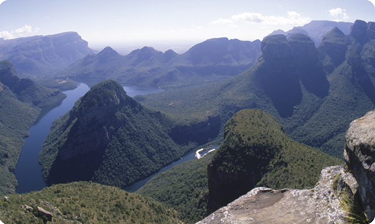
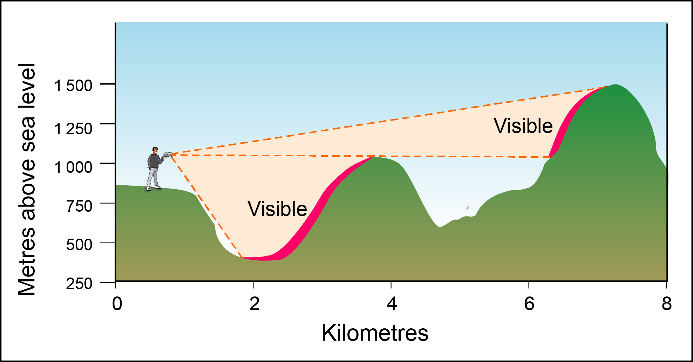

It is relatively easy to determine intervisibilty from photographs and cross-section sketches, as can be seen from this photograph and cross-section sketch of the Blyde River Canyon.

Blyde River Canyon

Intervisibility sketch
It is a little more difficult to determine intervisibility from contour line sketches and topographic maps, but some basic rules apply:
Two points are intervisible if they are at the same height and there is no higher land between them.
Where contours indicate a convex slope, the top and the foot of the hill are NOT intervisible.
Where contour lines show a concave slope, the top and the foot of the hill ARE intervisible.
Even though two points should be intervisible due to their altitude, trees or buildings may obscure the sight line.